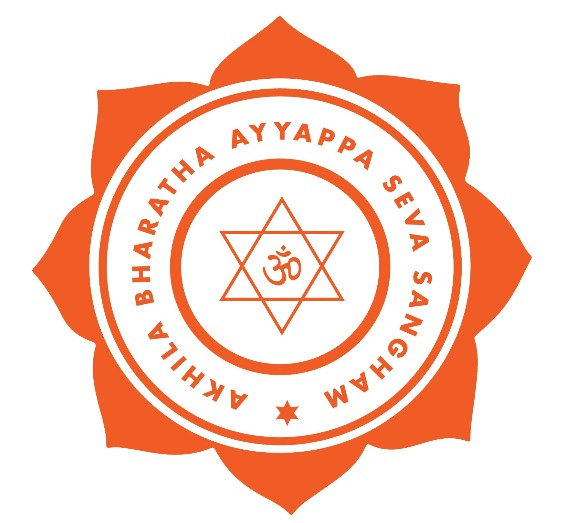
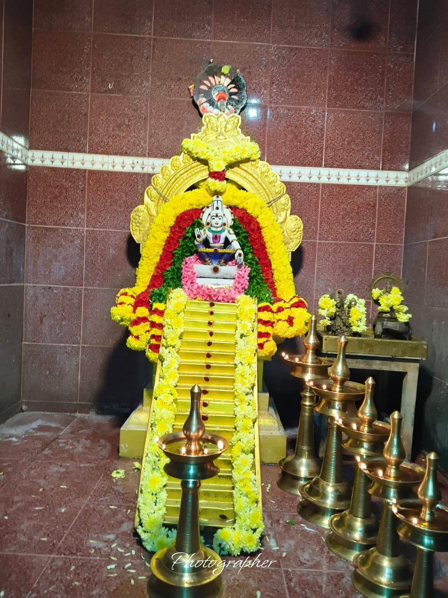
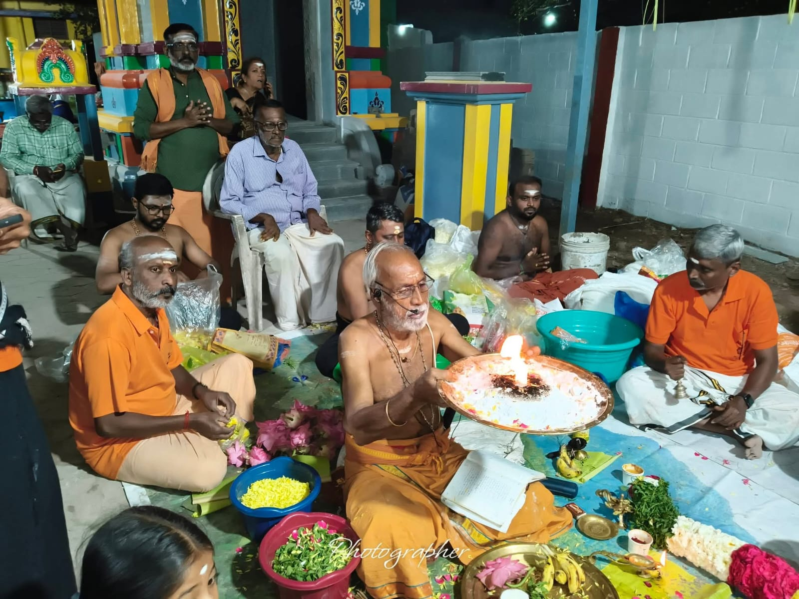
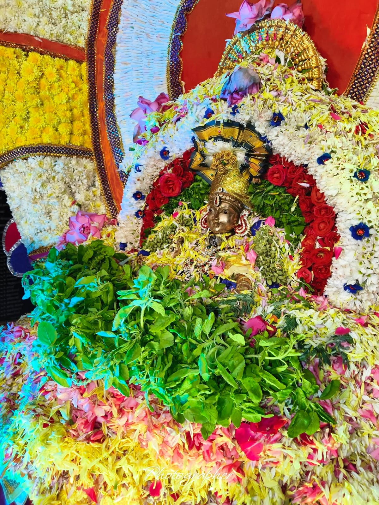
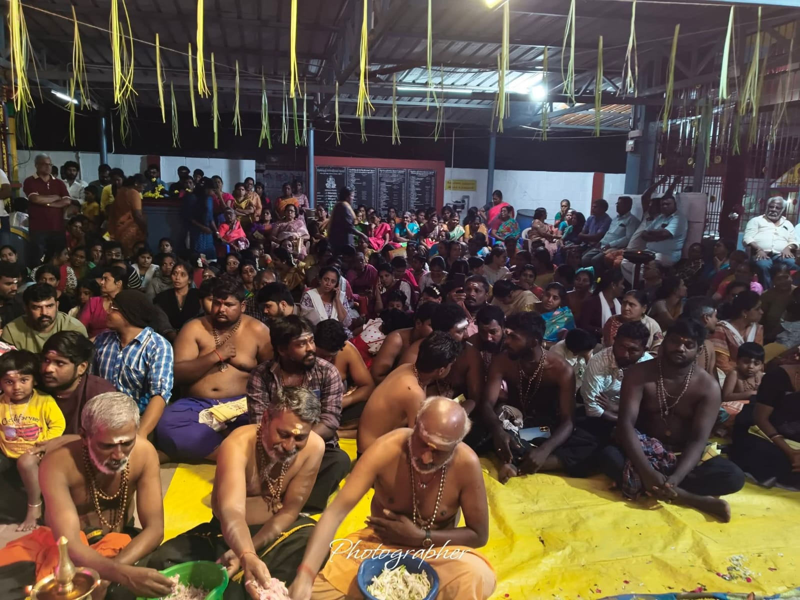

About ABASS Trust
Steadfast devotion to Lord Dharma Sastha, serving devotees, fostering cultural harmony, and extending compassionate community welfare.
Temple Service, Food and Education for all
ABASS — Abhath Bhanthavan Ayyappa Seva Sangham was formed on 25th March, 2024, inspired by ABASS — Akhila Bharatha Ayyappa Seva Sangham and its untiring service. Our members are also part of Akhila Bharatha Ayyappa Seva Sangham through the Pallavaram Branch.
How ABASS Came to Be
Key milestones in the history of ABASS, from decades of Seva in Pallavaram to the formation of the Trust.
Yearly Vilakku & Padi Pooja Begin
Guruswamys in Pallavaram began performing the yearly Vilakku Pooja and Padi Pooja, a tradition that has continued for over two decades.

OngoingInspired by Akhila Bharatha Ayyappa Seva Sangham
Our Gurusamys and members remained connected to ABASS — Akhila Bharatha Ayyappa Seva Sangham through the Pallavaram Branch, drawing inspiration from its untiring service.
ABASS Trust Formed
Abhath Bhanthavan Ayyappa Seva Sangham Trust (Regd) was formally formed, with Late Shri Sethumadhavan (Gurusamy), Late Shri V H Shankaran (Gurusamy), Shri Vasantha Kumar (Gurusamy) and Shri Jayamohan (Gurusamy) pivotal to its formation. They started their pilgrimage to Sabarimala in the year 1973.
Temple Service, Food & Education for All
ABASS continues monthly Annadhaanam, yearly Padi and Vilakku Pooja, and pooja on request for devotees across Chennai city.
A trust dedicated to devotion and community wellbeing
ABASS works across religious, educational, cultural and welfare-oriented activities, as set out in the objects of its Trust Deed.
Religious & Spiritual
Conducting authentic temple poojas, 18 Padi Pooja, Vilakku Pooja, and guiding pilgrims in the strict Sastha vratham codes.
Education & Gurukulam
Supporting student scholarships, educational aid, Vedic learning, and moral development for underprivileged youth.
Culture & Music
Encouraging devotional music, Namasankeerthanam, traditional instruments, and classical art forms in temple festivals.
Annadhaanam & Relief
Mass Annadhaanam feeding thousands, medical checkups, senior citizen care, and disaster relief for the needy.
Divine Glimpses of Seva in Action
Authentic photographs capturing the spirit of prayer, seva, and community brotherhood at ABASS.







Registered, Transparent, Accountable
ABASS is formally constituted as a registered public charitable trust, with structured administration and transparent record-keeping.